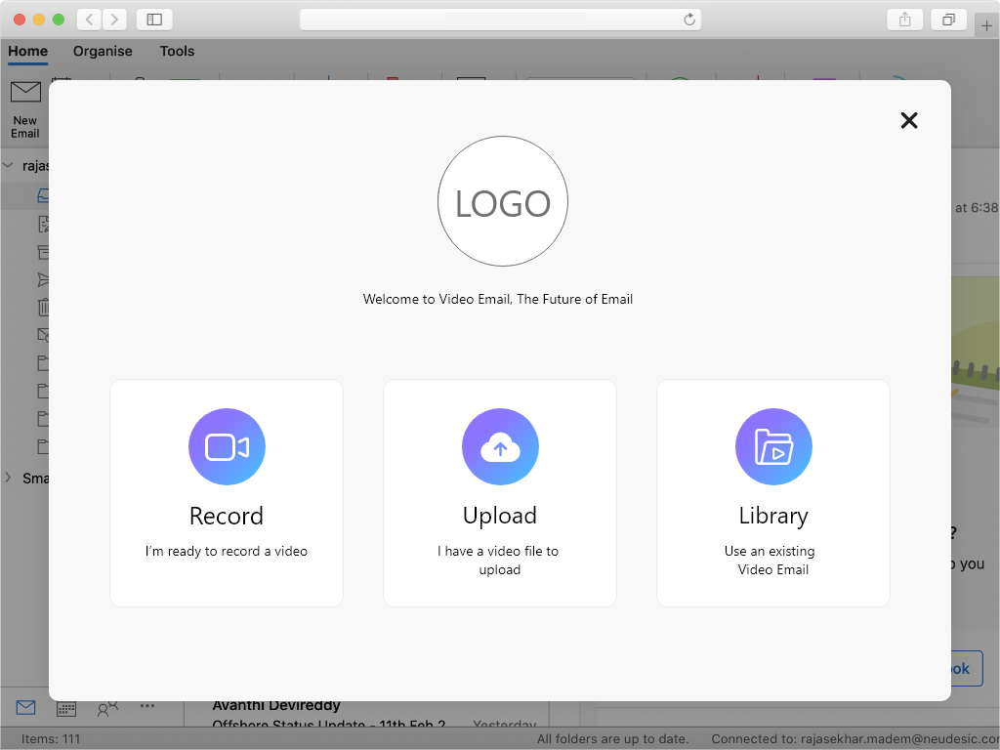
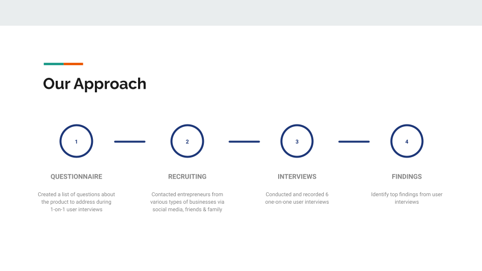
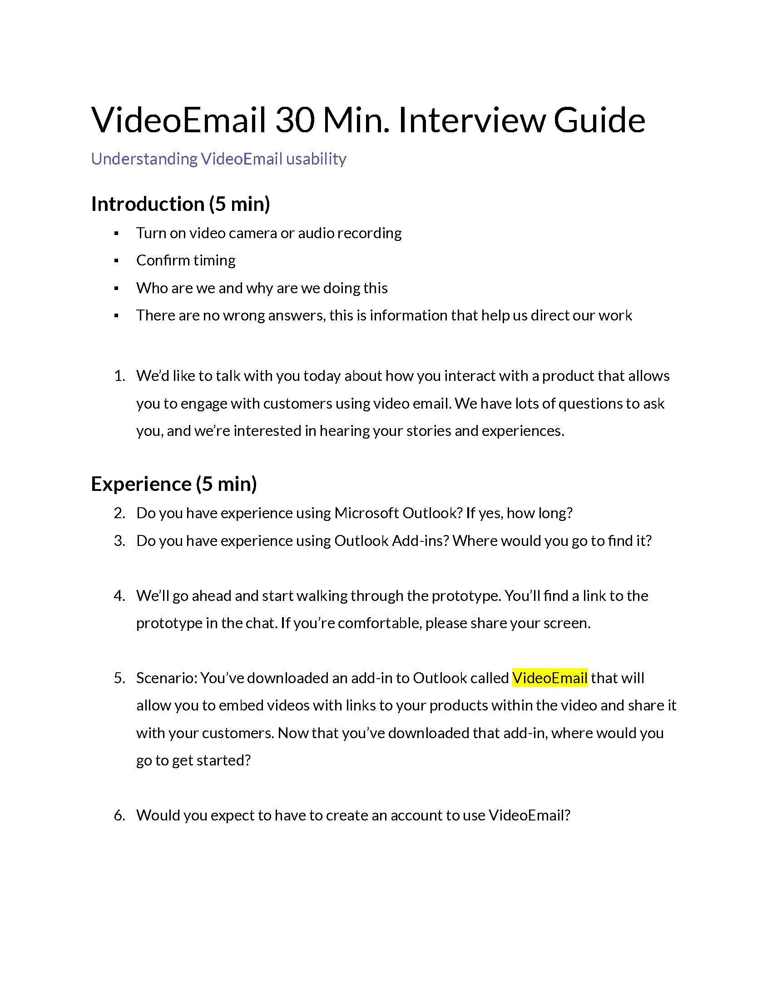

The Scope: UX Strategy and Research
Our team works by a two-week sprint process. At the end of each sprint, we hold preplanning and planning meetings to review designs and confirm we are ready for the upcoming sprint. We also conduct a backlog grooming session to address if future stories are an adequate size. As the sprint begins, we hold a sprint retrospective to review what went well, what did not, and what could be improved from the last sprint.
The Skeleton: Creating the Wireframes
The Lead UX Designer instructed me to create the wireframes for recording a video, uploading an existing video, viewing the video library and editing a video, which he would then review and make changes to afterwards. I first created wireframes based on the functionality the developers programmed: a simple plugin that on click, pops up the video into a new browser with options to record and add interactive links. As our team delved further into the stories the Business Analyst created with the stakeholders, much of the required functionality behaved like the client’s live video streaming platform. As such, any functionality (such as recording, full screen option, etc.) that was already developed and relevant to the video email platform was adopted in the wireframes. After I created the wireframes and confirmed that they met the acceptance criteria, I would discuss and review them with the Principal UX/UI Designer. Once reviewed, we would discuss the designs in elaboration meetings with the Lead Developer, Business Analyst and Delivery Manager. After approval by the team, we would present the designs to the client, and repeat the process should any updates occur.
The Surface: Creating the Prototype

Prototype - Landing Page
Once the wireframes were completed, we began the visual design phase of the project. At this stage, a senior UX designer from the Global Services team was added to the team. The designer created the original visual designs of the product, basing it off of the client’s existing branding and style guide. As the team continued to iterate through the designs, I aided in the following: updating the UX functionality of the designs as the sign up feature was created, updating any color and styling the clients wanted to change, and creating a working prototype to be tested on with users.
User Testing

User Research Findings Presentation - Our Approach
We were given a budget of 200 dollars to recruit users who fit the following criteria: solo-entrepreneurs looking to grow their business (MLM, small business, etc.). We planned on recruiting 8 users with our budget, rewarding each with a $25 gift card. We started by asking family and friends and were only able to find 2 fit the criteria. I decided to recruit via instagram and reached out to eight various solo-entrepreneurs I follow. It was successful, and I was able to recruit 4 more users for testing. We were able to test our prototype with 6 users total.

User Interview Guide - Page 1
To prepare for the usability testing, I helped create a script with the principal UX designer and scheduled video meetings with the users. The script first addressed their experience with email and email plugins. We then asked the user to add a video and add animated interactions to the video to identify their user process. Lastly, we asked them what they expected from the Library and Upload menu items and what they would like to change and what they liked the most about in the existing prototype. For each usability test, I created notes using Optimal Workshop, while the principal designer ran testing. I consolidated our findings into a UX Findings presentation to show both qualitative and quantitative results to the client. The overall results of the tests proved to meet our assumptions: users were interested in this product. With the principal designer’s help, I divided the findings into common themes found and added user quotes to show genuine user reactions to the client. I also added graphs and percentages to show what features the users liked. The principal UX designer presented our findings, which the client was very pleased with.